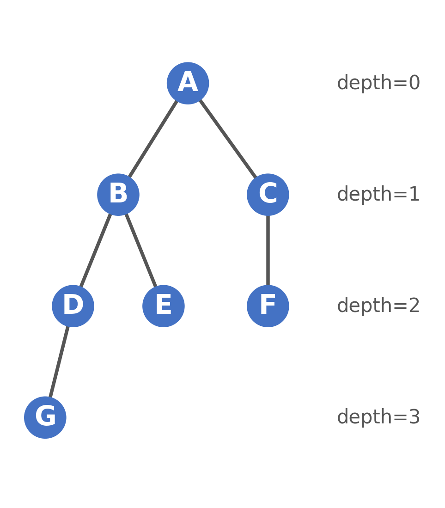
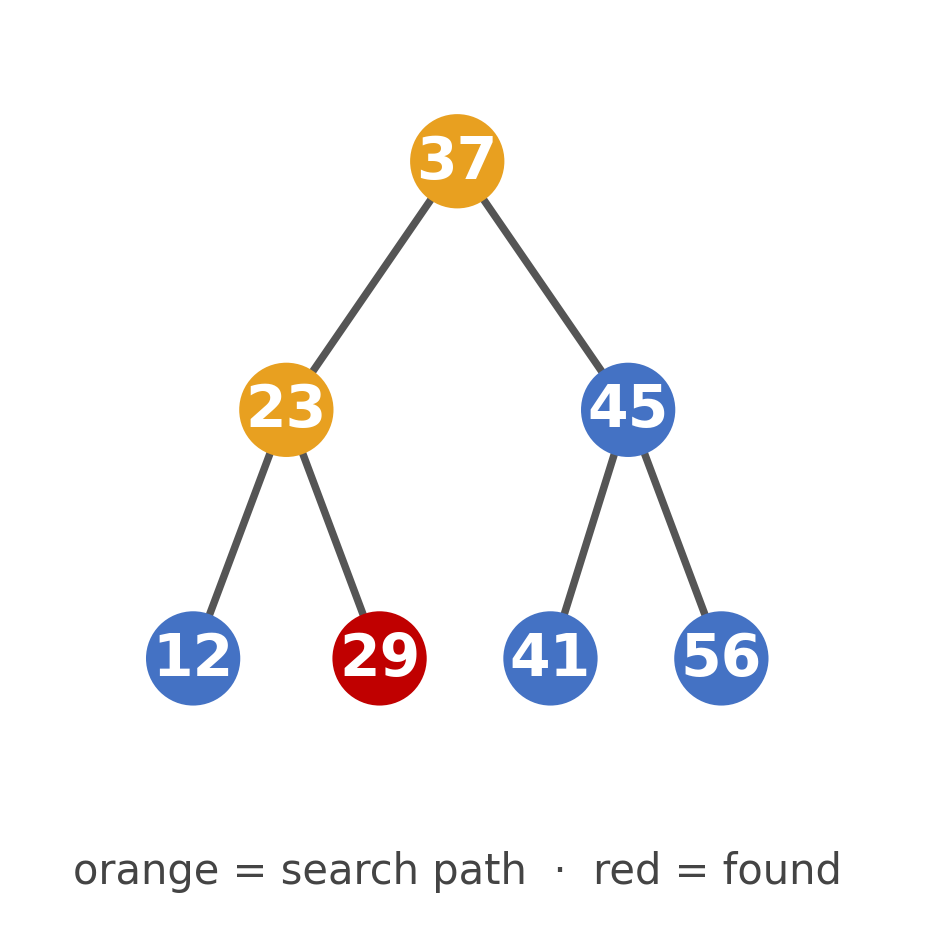
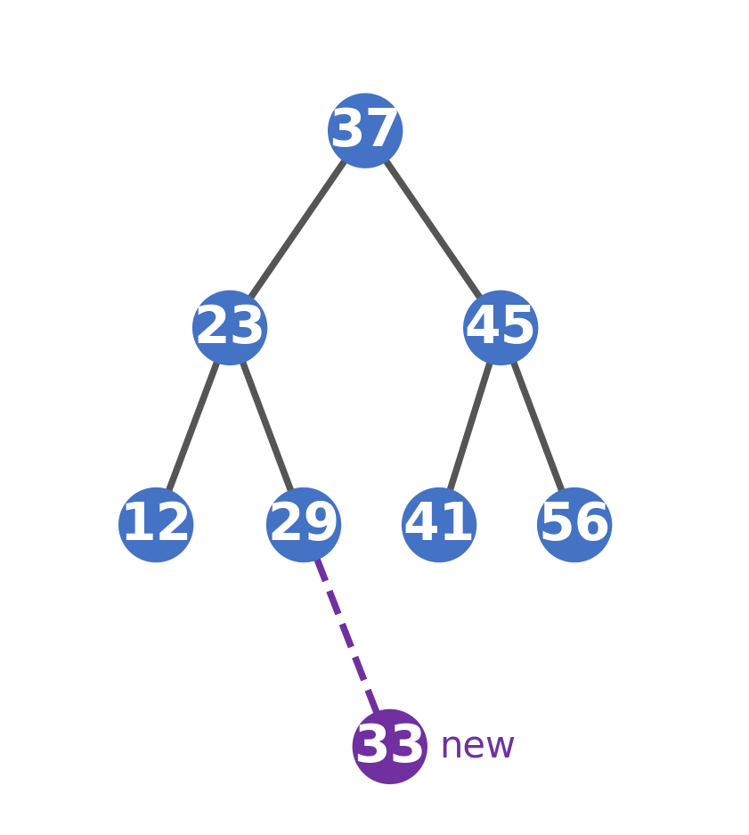
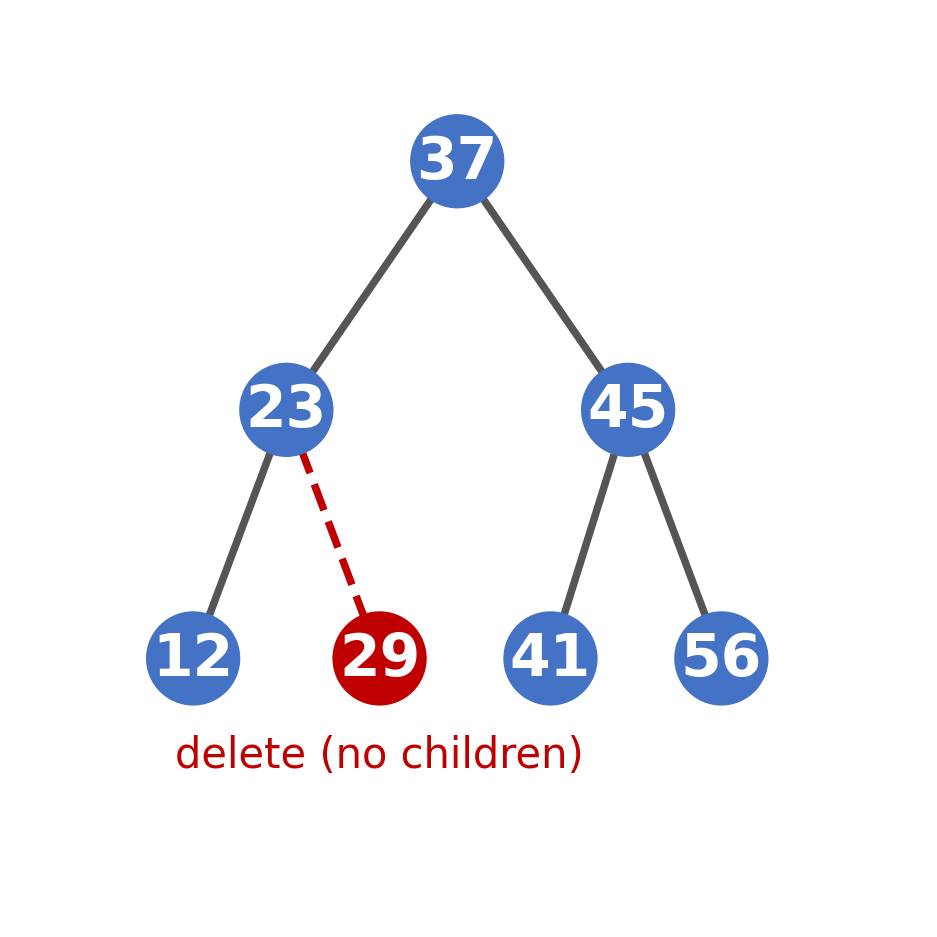
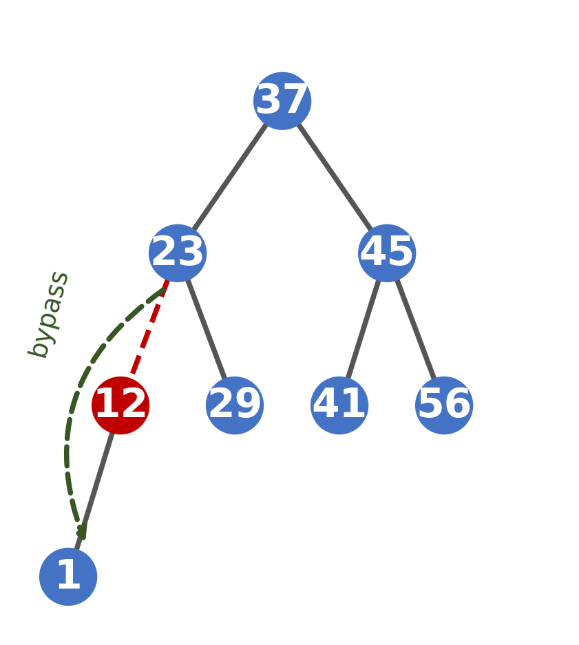
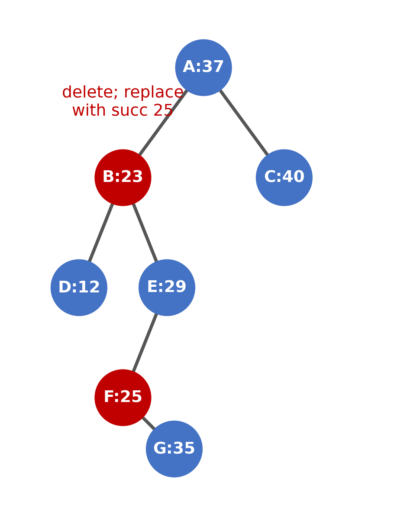
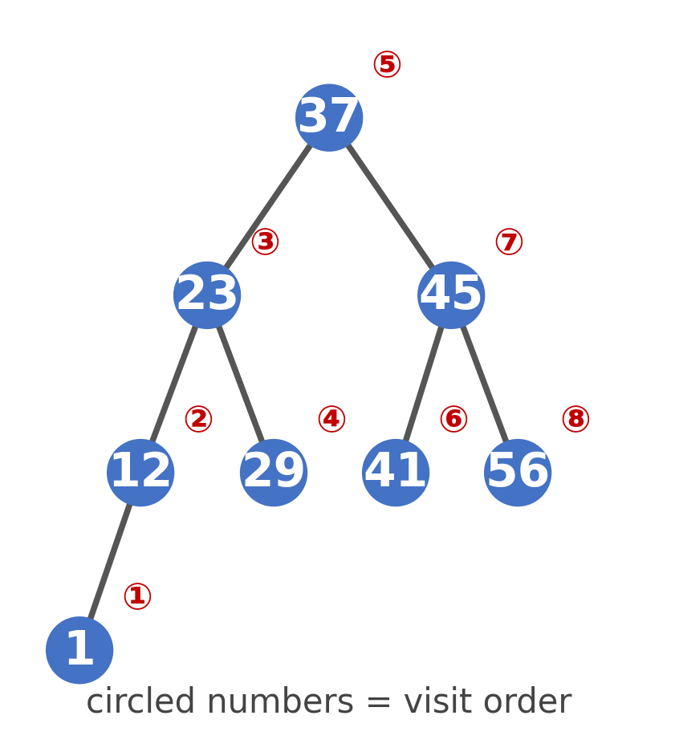
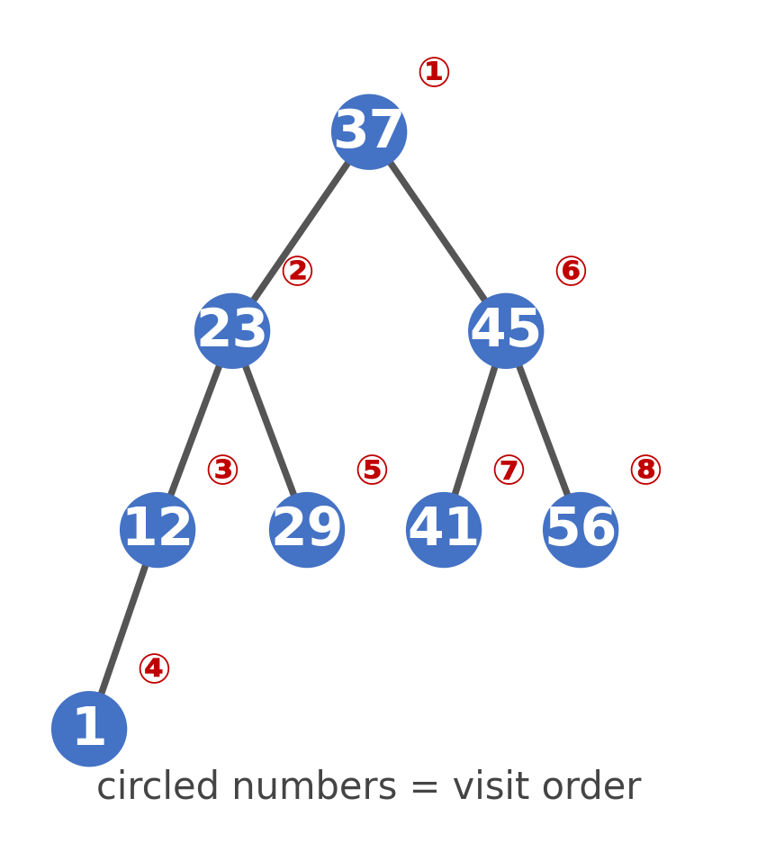
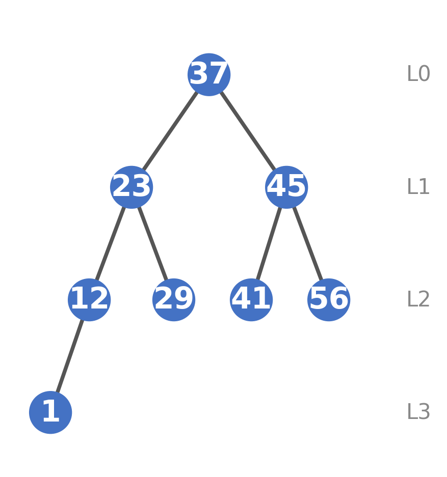
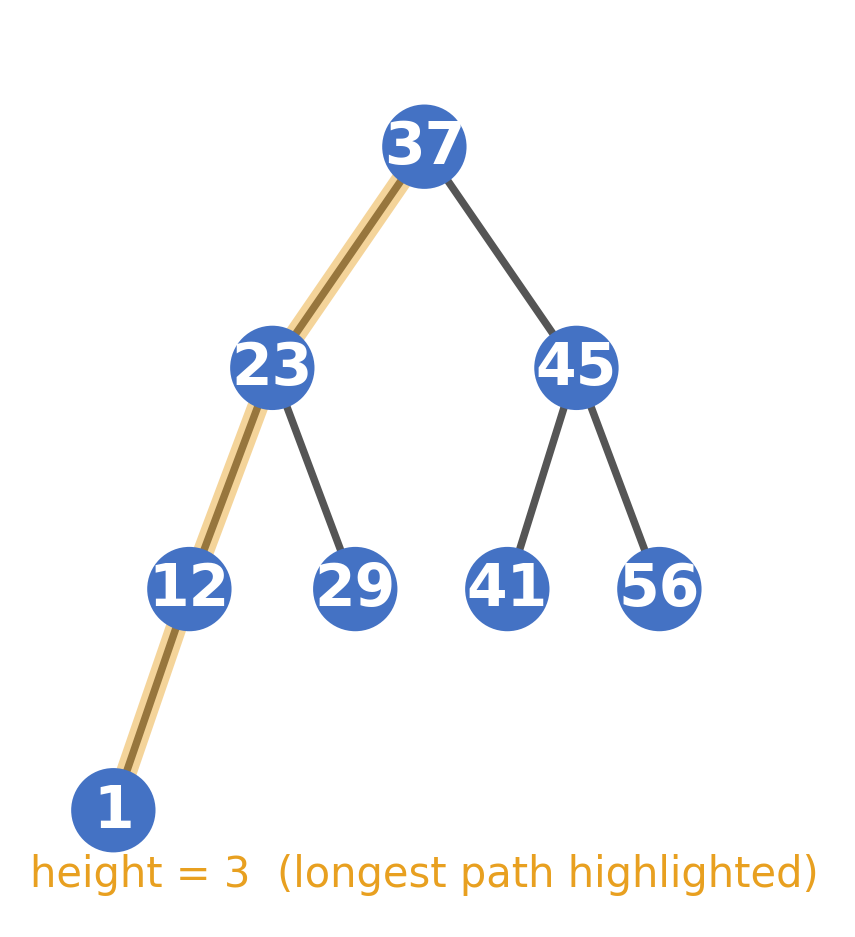

Tree
Liting Zhang
University of West Florida
Applications of Trees
Trees are used widely in computer science
Hierarchical Data Representation — file systems, organizational charts
Searching and Sorting Structures — Binary Search Trees (BSTs), Heaps
Databases — B-Trees used in databases and file systems
Compiler Design — Abstract Syntax Trees used to represent program structure and expressions
Tree Terminology
Root: topmost node of the tree
Internal node: a node with at least one child
Parent: node that has child nodes
Child: nodes derived from a parent
Leaf: node with no children
Sibling: nodes sharing the same parent
Edge: the link from a node to a child

Tree Terminology (cont.)
Degree of a vertex: number of edges connected to it
Degree of a tree: maximum degree of any vertex
Depth: distance from the root node
Height: longest path from a node to a leaf
Ancestors: include the node's parent, the parent's parent, etc., up to the tree's root
Descendant: a node's descendants include the node's children, the children's children, etc.
Subtree: any node X in the tree and all of X's descendants
Binary Tree and Representation
A Binary Tree is a tree where each node can have at most two children.
It is an ordered tree where the children of each node have a defined left-to-right order
Types
Full Binary Tree: every node has 0 or 2 children
Complete Binary Tree: all levels are full except possibly the last and all nodes in the last level are as far left as possible
Perfect Binary Tree: all internal nodes have two children and all leaves are at the same level
Skewed Binary Tree: every node has only one child (left or right)
Zybook 11.2.1, 11.2.5
Binary Search Tree
A binary search tree (BST) is a binary tree where
The left subtree contains values smaller than the root
The right subtree contains values greater than the root
Advantages
Efficient searching and sorting
Average time complexity: O(log n)
If unbalanced, worse case can degrade to O(n)
BST Search Algorithm
If the key is smaller than the root's value, move left
If greater, move right
If equal, node found
If NULL, element not found
Node* search(Node* root, int key) {
if (root == NULL || root->data == key)
return root;
if (key < root->data)
return search(root->left, key);
else
return search(root->right, key);
}BST Search Example
| stack function call | return |
|---|---|
| search(37, 29) | 29 |
| search(23, 29) | 29 |
| search(29, 29) | 29 |

BST Insertion
Node* insert(Node* root, int key) {
if (root == NULL) {
return new Node(key);
}
if (key < root->data){
root->left = insert(root->left, key);
}
else if (key > root->data){
root->right = insert(root->right, key);
}
return root;
}New node is placed maintaining the BST property
Recursion helps move through the tree until correct position is found
Complexity: O(log n)
BST Insertion Example
| function call stack | return |
|---|---|
| insert(37, 33) 37->left = insert(23, 33) | 37 |
| insert(23, 33) 23->right = insert(29, 33) | 23 |
| insert(29, 33) 29->right = insert(null, 33) | 29 |
| insert(null, 33) | 33 |

BST Deletion
Node* deleteNode(Node* root, int key) {
if (root == NULL) return root;
if (key < root->data)
root->left = deleteNode(root->left, key);
else if (key > root->data)
root->right = deleteNode(root->right, key);
else {
if (!root->left) return root->right;
else if (!root->right) return root->left;
Node* temp = minValueNode(root->right);
root->data = temp->data;
root->right = deleteNode(root->right, temp->data);
}
return root;
}No child: delete node directly
One child: connect parent to child
Two children: replace node with its inorder successor (the leftmost child of this node's right subtree)
BST Deletion Example — No Child (delete 29)
| function call stack | return |
|---|---|
| delete(37, 29) 37->left = delete(23, 29) | 37 |
| delete(23, 29) 23->right = delete(29, 29) | 23 |
| delete insert(29, 29) return null | null |

BST Deletion Example — One Child (delete 12)
| function call stack | return |
|---|---|
| delete(37, 12) 37->left = delete(23, 12) | 37 |
| delete(23, 12) 23->left = delete(12, 12) | 23 |
| delete(12, 12) return 12->left, 1 | 1 |

BST Deletion Example — Two Children (delete 23)
| function call stack | return |
|---|---|
| delete(A, 23) A->left = delete(B, 23) | A |
| delete(B, 23) succ=25 B->data=25 B->right=delete(E,25) | B |
| delete(E, 25) E->left = delete(F, 25) | E |
| delete(F, 25) | null |

Tree Traversal Methods
Traversal means visiting every node in a specific order
Inorder (left, root, right) — prints nodes in ascending order for BSTs
Preorder (root, left, right) — useful for copying or exporting tree structure
Postorder (left, right, root) — useful for deleting or freeing trees
Level order (breadth-first) — uses a queue to traverse level by level
Inorder Traversal Example
| call | action |
|---|---|
| Inorder(37) | go left |
| Inorder(23)→Inorder(12)→Inorder(1) | visit(1) ① |
| back to 12 | visit(12) ② |
| back to 23 | visit(23) ③ |
| Inorder(29) | visit(29) ④ |
| back to 37 | visit(37) ⑤ |
| Inorder(45)→visit(41)⑥,visit(45)⑦,visit(56)⑧ |

Preorder Traversal Example
| call | action |
|---|---|
| preorder(37) | visit(37) ① |
| preorder(23) | visit(23) ② |
| preorder(12) | visit(12) ③ |
| preorder(1) | visit(1) ④ |
| preorder(29) | visit(29) ⑤ |
| preorder(45) | visit(41)⑥, visit(45)⑦, visit(56)⑧ |

Postorder Traversal Example
| call | action |
|---|---|
| postorder(37) | go left |
| postorder(12)→postorder(1) | visit(1) ① |
| back to 12 | visit(12) ② |
| postorder(29) | visit(29) ③ |
| back to 23 | visit(23) ④ |
| postorder(45)→visit(41)⑤,visit(56)⑥,visit(45)⑦ | |
| back to 37 | visit(37) ⑧ — last! |
Level Order Traversal
| operation | queue | visited |
|---|---|---|
| enqueue(37) | 37 | |
| node=front()=37 dequeue(), visit() | 37 | |
| enqueue(23), enqueue(45) | 23 45 | 37 |
| node=front()=23, dequeue(), visit() | 45 | 37 23 |
| enqueue(12), enqueue(29) | 45 12 29 | 37 23 |
| node=front()=45, dequeue(), visit() | 12 29 | 37 23 45 |
| enqueue(41), enqueue(56) | 12 29 41 56 | 37 23 45 |
| node=front()=12, dequeue(), visit(); enqueue(1) | 29 41 56 1 | 37 23 45 12 |
| node=front()=29, dequeue(), visit() | 41 56 1 | 37 23 45 12 29 |
| node=front()=41, dequeue(), visit() | 56 1 | 37 23 45 12 29 41 |
| node=front()=56, dequeue(), visit() | 1 | 37 23 45 12 29 41 56 |
| node=front()=1, dequeue(), visit() | 37 23 45 12 29 41 56 1 |

Height of a BST
Height is the number of edges on the longest path from root to a leaf
1 int height(Node* root) {{
2 if (root == NULL)
3 return -1;
4 int left = height(root->left);
5 int right = height(root->right);
6 return 1 + max(left, right);
7 }}height(37) → 1+max(l,r) = 3
L: height(23) → 1+max(l,r) = 2
L: height(12) → 1+max(l,r) = 1
L: height(1) → 1+max(l,r) = 0
L: height(null) → -1
R: height(null) → -1
R: height(null) → -1
R: height(29) → 1+max(l,r) = 0
L: height(null) → -1
R: height(null) → -1
R: height(45) → 1+max(l,r) = 1
L: height(41) → 1+max(l,r) = 0
L: height(null) → -1
R: height(null) → -1
R: height(56) → 1+max(l,r) = 0
L: height(null) → -1
R: height(null) → -1
Parent Node Pointer
Useful for upward traversal (finding parent)
Helpful in finding successor or predecessor nodes
struct Node {
int data;
Node* left;
Node* right;
Node* parent;
Node(int val) : data(val), left(NULL), right(NULL), parent(NULL) {}
};BST Efficiency and the Problem
The efficiency of a Binary Search Tree (BST) depends on its height:
Search, insertion, and deletion operations take O(h) time
For a balanced BST, height ≈ log₂(n) → operations are O(log n)
For a skewed (unbalanced) tree, height ≈ n → operations degrade to O(n)
Example — Insert: 1, 2, 3, 4, 5
1
\
2
\
3
\
4
\
5Solutions to Maintain Efficiency
Solution 1: Randomized Insertion
Insert nodes in random order so the tree tends to stay roughly balanced
Works well statistically but not guaranteed for all cases
Solution 2: Balancing Mechanisms
To guarantee logarithmic performance, use self-balancing trees
These trees automatically perform rotations to maintain balance after insertions or deletions
AVL tree, Red-black tree, B-tree — guarantee height ~ O(log n) always
Solution 3: External Balancing
Periodically rebuilding the BST using a sorted array or list of values when it becomes too unbalanced
Solution 4: Move recently accessed node toward the root
This idea leads to Splay Trees
Key Takeaways
BST Property: left < root < right, holds recursively at every node
Operations: all run in O(h), O(log n) when balanced, O(n) when skewed
Search & Insert: compare key, go left or right until found or NULL
Delete: no child: remove directly
Delete: one child: bypass node, connect parent to child
Delete: two children: replace with inorder successor, delete successor
Traversals
Inorder: sorted output
Preorder: copy / serialize
Postorder: delete / free
Level order: breadth-first, uses a queue
Balancing: skewed tree degrades to O(n); fix with AVL, Red-Black, or B-tree